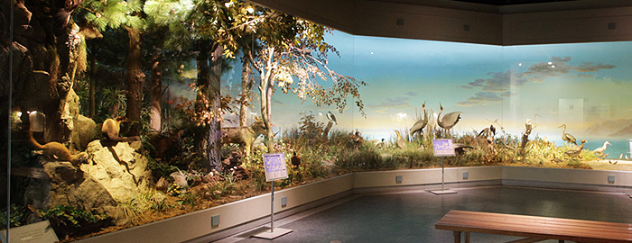
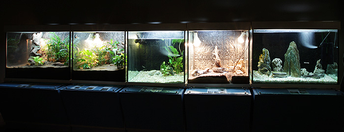

상설전시
다양한 전시를 항상 만나볼 수 있습니다.
-
디오라마실(Diorama Hall)
디오라마란 자연생태를 표본, 모형 및 그림 등을 이용하여 재현한 것을 말합니다. 현재는 우리나라 중부지방을 바닷가, 습지, 숲으로 나누어 지역적 특성을 반영하는 생태환경을 재현하고 있습니다. 총 60여종, 110여 점의 동식물이 전시되어 있습니다.
 -
생태코너(Ecology corner)
살아있는 생물들을 접할 수 있는 곳이며, 수중, 육상, 등 각각의 생태환경에 서 살아가는 다양한 생물들의 번식과 성장을 관찰할 수 있습니다.
 -
식물코너
해조류를 포함한 다양한 식물의 표본을 생생한 생태 사진과 함께 전시하고, 실물에 근접한 모형이 설명 패널과 함께 전시되어 있습니다. 또한 약용 및 자원식물을 종자와 모형을 이용하여 전시하고, 귀화 식물 표본도 전시하고 있습니다.
- # 전시 코너
- 식물은/특산식물/귀화식물과 환경보존/자원식물/식물의 종자 산포방법/식물들은 씨앗을 어떻게 퍼뜨릴까요?
- # 식물은...
- 식물은 동물과 함께 거대한 생물계를 이루고 있습니다. 식물은 지구상에 나타난 이래 미지의 원시 식물로부터 끊임없이 진화가 계속되어 오늘날 30만 종이 넘는 다양한 식물의 세계를 이루게 되었습니다. 식물은 지구 어느 환경에서나 볼 수 있을 만큼 뛰어난 적응력을 보이며 모든 생물의 먹이사슬의 기초가 되었습니다. 또한 인간은 식물을 식량으로 사용하여 왔을 뿐만 아니라 의복, 거주, 무기, 도구, 염료, 의약품 등 다양한 목적에 이용하고 있습니다.
-
곤충코너
다양한 곤충을 계통에 따라 전시하였습니다. 구조와 특징, 변태와 탈피를 알기 쉽게 설명하였고, 희귀곤충, 동남아시아 곤충, 곤충을 채집하기 위한 각종 도구들 도 함께 전시됩니다.
- # 전시 코너
- 곤충은/곤충의 구조와 특징/변태와 탈피/곤충의 사회생활/수생곤충/우리나라의 희귀곤충
- # 곤충은...
- 곤충은 날개를 가진 유시아강과 날개가 없는 무시아강으로 나뉩니다. 곤충은 약 4억 년 전에 최초로 출현했으며, 약 3억 년 전에 유시곤충인 잠자리류, 하루살이류, 바퀴류가 나타났습니다. 곤충류는 동물의 총 종류 수의 75%를 차지하는 최대의 생물군으로 총 종류 수는 약 90만 종으로 알려져 있습니다.
-
무척추동물코너
원생동물로부터 척색동물에 이르기까지 각 동물군에 속하는 표본, 패널, 사진, 그림을 이용해 특징을 이해하도록 하였습니다. 건조표본과 액침표본이 전시되며, 다양한 모양의 산호를 비롯한 바다 속의 희귀한 표본들과 적조현상, 위험한 해산동물, 위장과 의태, 공생 등 재미있는 이야기를 살펴볼 수 있습니다.
- # 전시 코너
- 무척추동물/해면동물/자포동물/산호와 산호초/연체동물/절지동물/극피동물
- # 무척추동물은...
- 척추나 내골격을 갖지 않은 동물군을 말합니다. 모든 동물 종의 96%가 무척추동물입니다. 무척추동물은 단세포인 원생동물에서부터 다세포인 해면·연체 ·절지 ·척색 동물 등의 많은 문으로 나누어져 형태나 발생 등도 뚜렷하게 다른 다양성을 나타내고 있습니다.
-
척추동물코너
어류, 파충류, 양서류, 조류, 포유류가 전시되고 있습니다. 어류는 무악어류, 연골과 경골어류로 나누어 각각의 표본과 특징 등이 패널과 함께 전시되며, 독립장에 전시된 양서류는 표본들과 함께 발생단계를 액침병에 제작하여 설명하고 있습니다. 멸종된 원앙이사촌을 목각으로 재현하였고, 외국산 파충류, 텃새, 철새, 국제보호조, 포유류 등 귀중하고 다양한 표본들을 전시하며 생태적 특징을 이해할 수 있도록 하였습니다.
- # 전시 코너
- 어류/양서류/파충류/조류/포유류/텃새와 철새/국제보호조/오리너구리/새의 둥지/영상시설
- # 척추동물은...
- 척추동물은 척추와 내골격, 효과적이고 발달한 신경계, 호흡계, 기관계를 가진 고등 동물로 동물계에서 가장 복잡한 체제와 분화된 기능을 가지고 있습니다. 2개의 그룹, 즉 물고기류인 어상강과 양서류, 파충류, 조류 및 포유류를 포함하는 사지상강으로 나뉩니다.
-
지구과학코너
광물, 암석, 화석이 다양한 주제에 따라 전시되어 있으며, 특히 운석과 대륙표이설, 공룡의 일대기와 보석광물, 형광광물, 미화석 코너는 지구에 대한 흥미와 관심을 일으킬 것입니다. 또한 영상 시설을 통해 천체에 대한 다큐멘터리를 감상할 수 있어 우주에 대한 다양한 관심을 충족시킬 수 있을 것입니다.
- # 전시 코너
- 광물/암석/화석/운석/대륙표이설/공룡의 일대기/보석광물/미화석코너/형광광물/영상시설
- # 광물은...
- 광물(mineral)은 자연에서 산출되는 일정한 화학 성분과 결정 구조를 가지는 고체 물질을 말합니다.
- # 암석은...
- 암석(rock)은 생성방식에 따라 화성암, 퇴적암, 변석암으로 분류됩니다.
- # 화석은...
- 화석(fossil)은 지질 시대에 서식하던 동식물의 생체가 지층에 매몰된 후 보존된 것입니다.